Introduccion al Procesamiento Digital de Señales
Parte 1
¿Qué es?
El DSP es una área de estudio que se encarga del Análisis, Transformación y Síntesis de señales digitales.
¿Qué es una señal digital?
Las señales son magnitudes físicas mediante las que se puede transmitir información.
El que sean digitales hace referencia a que sus variables se encuentran discretizadas.
Tipos de Señales
Se pueden clasificar según:
- Dominio
- Su naturaleza
- Periodicidad
- Paridad
- Cantidad de canales y/o variables
Tipos de Señales - Dominio
| Tiempo Continuo | Tiempo Discreto | |
| Amplitud Continua | 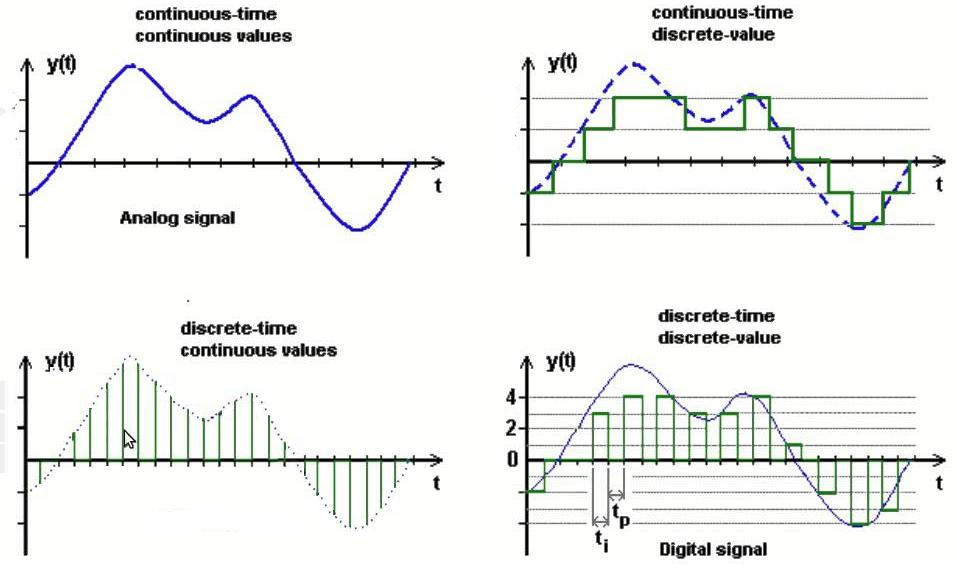 | |
| Amplitud Discreta | ||
Tipos de Señales - Naturaleza
| Determinística | Estocástica |
| 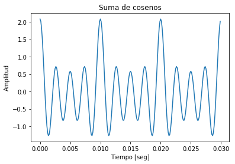 | 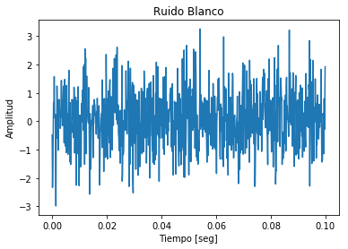 |
Tipos de Señales - Periodicidad
| Periódica | Áperiódica |
| 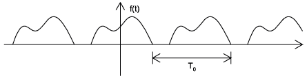 |  |
| $$x_{(t+nT)} = x_{(t)}$$ | $$x_{(t+nT)} \neq x_{(t)}$$ |
También existen señales cuasi-periódicas como el habla.
Tipos de Señales - Paridad
| Par | Impar |
| 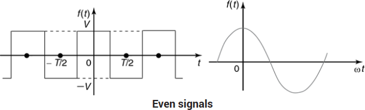 | 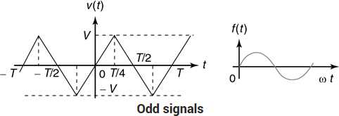 |
| $$x_{(t)} = x_{(-t)}$$ | $$x_{(t)} = -x_{(-t)}$$ |
Tipos de Señales - Canales y Variables
| Multi-canal | Multi-dimensional |
 |
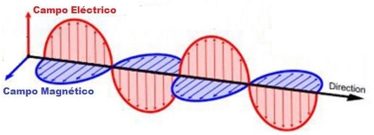 |
Análisis
Se puede realizar en 3 dominios diferentes:
- Temporal (o Espacial)
- Espectral
- Cepstral (Homomorfico)
Análisis Temporal
Estudia las variaciones de la señal en función del tiempo.

$x_{(t)} = A \cdot \cos (\omega t + \varphi)$
$\omega = 2 \pi f \quad \wedge \quad f = \frac{1}{T}$
Análisis Temporal
Comumente, se toman las siguientes métricas:
| Amplitud | Período | Fase | Energía | Potencia | RMS |
|---|---|---|---|---|---|
| $$x_{[n]}$$ | $$T = \frac{1}{f}$$ | $$\varphi$$ | $$\sum \limits_{\lt N \gt}{\left|x_{[n]}\right|}^2$$ | $$\frac{1}{N}\sum_{\lt N \gt} {\left|x_{[n]}\right|}^2$$ | $$\sqrt{\frac{1}{N}\sum_{\lt N \gt} {x_{[n]}}^2}$$ |
Analisis Espectral
El Dominio Temporal, es el más intuitivo pero el que menos información nos brinda.
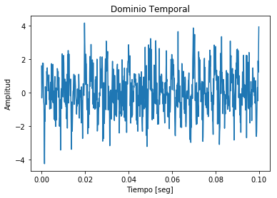 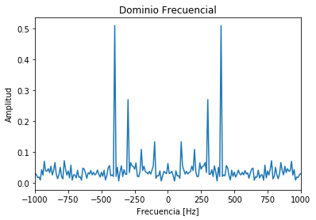Analisis Espectral - Fourier
Es una transformación matemática empleada para convertir señales entre el dominio temporal (o espacial) y el dominio frecuencial.
Busca aproximar una función arbitraria $f_{(t)}$ mediante otra función escalada $C x_{(t)}$, minimizando el MSE.
Analisis Espectral - Fourier
Un conjunto de funciónes que cumplen con esta característica es la función exponencial compleja.
$e^{-jn\omega_0t} = \cos\left(n\omega_0 t\right) + j \sin\left(n\omega_0 t\right)$
| Por lo tanto se puede entender a la Transformada de Fourier como una proyección de la función sobre infinitos senos de distinta frecuencia. | 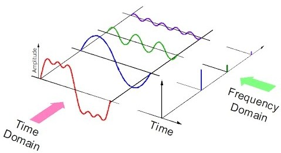 |
Analisis Espectral - Fourier
| Transformada | Anti-transformada | ||
|---|---|---|---|
| Señales Continuas | Periódica | $$C_{n} = \frac{1}{T_0}\int\limits_{T_0} f_{(t)} e^{-jn\omega_0t} dt$$ | $$f_{(t)} = \sum\limits_{n=-\infty}^\infty C_{n} e^{jn\omega_0t}$$ |
| Aperiódica | $$F_{(\omega)} = \int\limits_{t=-\infty}^{\infty} f_{(t)} e^{-j\omega t} dt$$ | $$f_{(t)} = \frac{1}{2\pi}\int\limits_{\omega=-\infty}^\infty F_{(\omega)} e^{j\omega t} d\omega$$ | |
| Señales Discretas | Periódica | $$C_k = \frac{1}{N_0}\sum\limits_{n=0}^{N_0} x_{[n]} e^{-jk\Omega_0 n}$$ | $$x_{[n]} = \sum\limits_{k=0}^{N_0} C_k e^{jk\Omega_0 n} dt$$ |
| Aperiódica | $$X_{(\Omega)} = \sum\limits_{n=-\infty}^\infty x_{[n]} e^{-j\Omega n} dt$$ | $$x_{[n]} = \frac{1}{2\pi} \int\limits_{2\pi} X_{(\Omega)} e^{j\Omega n} d\Omega$$ | |
Analisis Espectral - Fourier
Representacion
La TF nos da una función compleja que se puede representar de forma:
| Cartesiana | Polar |
| $ X_{(\omega)} = \mathbb{R}e \{X_{(\omega)}\} + j \mathbb{I}m \{X_{(\omega)}\} $ | $ X_{(\omega)} = \|X_{(\omega)}\| \angle X_{(\omega)} $ |
La polar es la más utilizada, pero suele expresarse en decibeles:
$$\|X_{(\omega)}\|_{dB} = 20\cdot\log_{10}\left( \frac{\|X_{(\omega)}\|}{argmax(\|X_{(\omega)}\|)}\right)$$
Analisis Espectral - Fourier
Propiedades
Mirando en detalle las ecuaciones, se pueden deducir algunas propiedades importantes:
- Si $f_{(t)} \in \mathbb{R}e \Longrightarrow \|X_{(\omega)}\|$ es par y $ \angle X_{(\omega)}$ es impar
- Si $f_{(t)}$ es par $ \Longrightarrow \mathbb{I}m \{X_{(\omega)}\}=0$
- Si $f_{(t)}$ es impar $ \Longrightarrow \mathbb{R}e \{X_{(\omega)}\}=0$
Analisis Espectral - Fourier
Propiedades
| Linealidad | $\alpha f(t)+\beta g(t)$ | $\alpha F(\omega )+\beta G(\omega)$ |
|---|---|---|
| Dualidad o Simetría | $F(t)$ | $2\pi f(-\omega )$ |
| Escala | $f(at)$ | $\frac {1}{\left|a\right|}F\left({\frac {\omega }{a}}\right)$ |
| Inversión en el tiempo | $f^{}(-t)$ | $F^{}(-\omega )$ |
| Traslación en el tiempo | $f(t-t_{0})$ | $F(\omega )e^{-j\omega t_{0}}$ |
| Traslación en frecuencia | $f(t)e^{j\omega _{0}t}$ | $F(\omega -\omega _{0})$ |
| Derivación en el tiempo | $\frac {\partial ^{n}f(t)}{\partial t^{n}}$ | $\left(j\omega \right)^{n}F(\omega )$ |
| Derivación en el frecuencia | $\left(-jt\right)^{n}f(t)$ | $\frac {\partial ^{n}F(\omega )}{\partial \omega ^{n}}$ |
| Integración | $\int \limits _{-\infty }^{t}{f(\tau )\partial \tau }$ | $\frac {F(\omega )}{j\omega }+\pi F(0)\delta (\omega )$ |
| Convolución | $f(t)*g(t)$ | $F(\omega )G(\omega )$ |
| Modulación | $f(t)g(t)$ | $F(\omega )*G(\omega )$ |
Analisis Espectral - Fourier
Energía
Para poder representar una función en series de Fourier se debe cumplir con la siguiente condición:
$$\int \limits_{T_0} |f(t)|^2 dt \lt \infty$$
De cumplirse esta condición, podemos calcular la energía de la misma en el espectro mediante la Identidad de Parseval
$$\int \limits _{-\infty }^{\infty }{\left|f(t)\right|^{2}\partial t={\frac {1}{2\pi }}}\int \limits _{-\infty }^{\infty }{\left|F(\omega )\right|^{2}\partial \omega }$$
Analisis Espectral - Fourier
Algoritmo
Cooley–Tukey desarrollaron en 1965 un algoritmo que reduce la complejidad computacional de la DFT y la IDFT, de $O(N^2)$ a $O(N \log(N))$. Sin embargo, pone como restricción que la cantidad de muestras debe ser de potencia de 2.
Además, utilizando la propiedad de las señales reales
$X_{[k]}^*=X_{[-k]}$
se puede acelerar aun más (Sorensen, 1987).
Señales tipicas
Existen señales que debido a sus características, son muy utilizadas en el area:
- Coseno/Seno
- Cuadrada
- Delta
- Escalon
Señales tipicas - Coseno
$$f_{(t)} = A \cos (\omega_0 t) \qquad C_n = C_{-n} = \frac{A}{2}$$
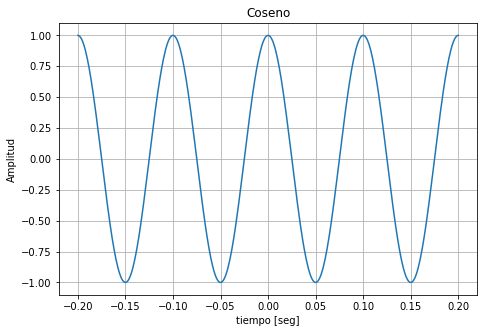 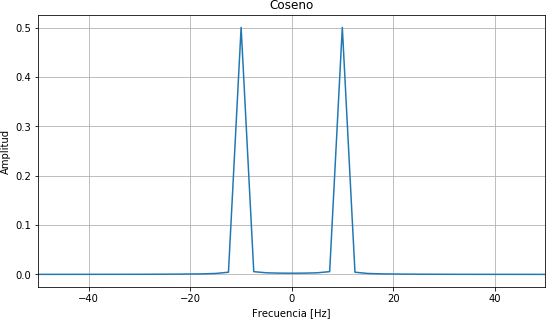Señales tipicas - Pulso
$$\prod {\left({\frac {t}{T}}\right)}=\left\{{\begin{aligned}&1,\left|t\right|\leq {}^{T}\!\!\diagup \!\!{}_{2}\;\\&0,\left|t\right|>{}^{T}\!\!\diagup \!\!{}_{2}\;\\\end{aligned}}\right. \qquad F_{(\omega)}=\frac {2\sin \left(\frac{\omega^T}{2}\right)}{\omega} = T \text{sinc} \left( T \frac {\omega }{2\pi }\right) $$
| 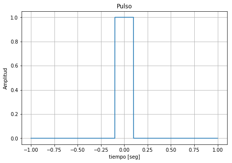 | 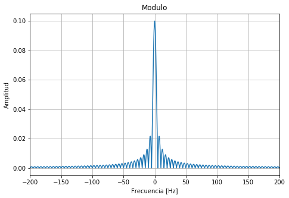 |

|

|
Señales tipicas - Delta
$$f_{(t)} = \delta_{(t)} \quad F_{(\omega)}=1$$
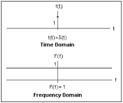Señales tipicas - Escalon
$$u(t)=\left\{{\begin{aligned}&1,t>0\\&0,t <0\\\end{aligned}}\right. \Longrightarrow \mathbb {F} [u(t)]={\frac {1}{j\omega }}+\underbrace {\pi \delta (\omega )} _{\text{a veces se omite}}$$
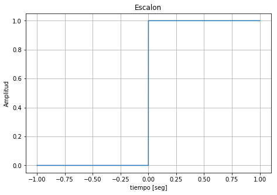 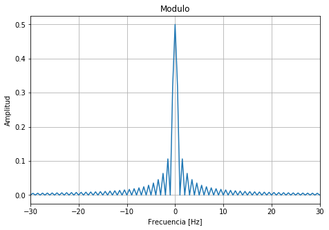Señales tipicas - Otras

|
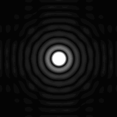 |
| 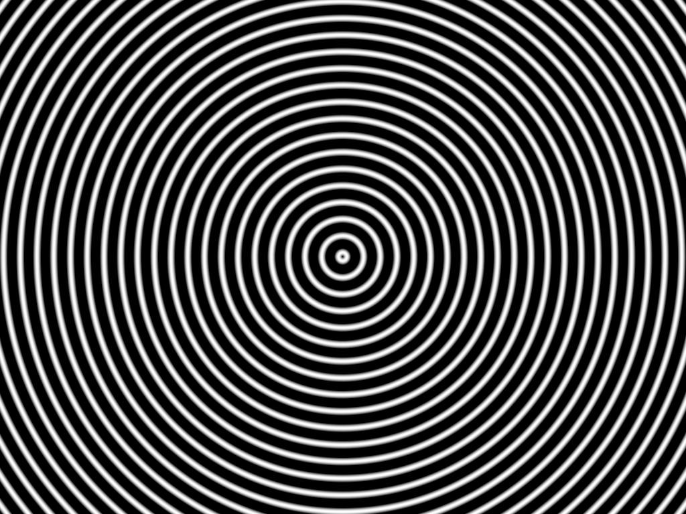 |
Sistemas LTI
Un sistema es un proceso que transforma una señal de entrada $x_{(t)}$ (o $x_{[n]}$) en una de salida $y_{(t)}$ (o $y_{[n]}$).
$y_{(t)} = T\left[ x_{(t)} \right] \qquad y_{[n]} = T\left[ x_{[n]} \right]$
Sistemas LTI - Definicion
El estudio de DSP se concentra en Sistemas Lineales e Invariantes en el Tiempo (LTI).
Esto se reduce en las siguientes propiedades:
- Superposición $T\left[ x_{1[n]} \cdot \alpha + x_{2[n]} \cdot \beta \right] = y_{1[n]} \cdot \alpha + y_{2[n]} \cdot \beta$
- Invariabilidad $T\left[ x_{[n-n_0]} \right] = y_{[n-n_0]}$
- Causalidad $T\left[ \delta_{[n]} \right] = 0 \quad \forall n \lt 0$
- Estabilidad $\|T\left[ \delta_{[n]} \right]\| \lt \infty$
Sistemas LTI - Respuesta al Impulso
Una señal puede descomponerse en una serie de deltas:
$$x_{[n]} = \sum_{k=-\infty}^\infty x_{[k]} \delta_{[n-k]} \qquad x_{(t)} = \int \limits_{T=-\infty}^\infty x_{(\tau)} \delta_{(t-\tau)} d\tau$$
Entonces:
$$y_{[n]} = x_{[n]}*h_{[n]} = \sum_{k=-\infty}^\infty x_{[k]} h_{[n-k]} \qquad T\left[ \delta_{[n-k]} \right]$$
Sistemas LTI - Respuesta al Impulso
Recordando la propiedad de convolución de la Transformada de Fourier:
$$ y_{[n]}=x_{[n]}*h_{[n]} \Longrightarrow Y_{[k]}=X_{[k]}H_{[k]}$$
Muestreo
Para digitalizar una señal, debemos discretizar tanto la variable temporal como su amplitud.
Esta tarea la realizan los Analog to Digital Converters (ADC).
Muestreo
| Sample | Sample & Hold |
|---|---|
 |
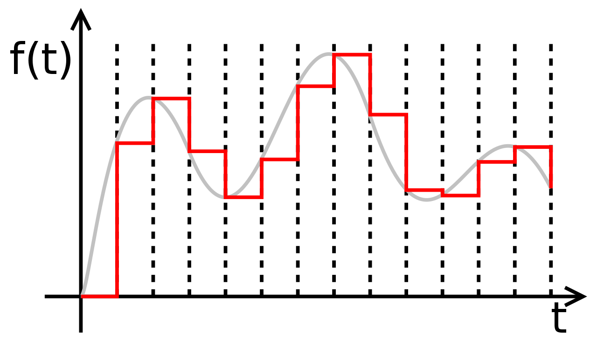 |
Equivale a multiplicar la misma por deltas desplazados
$x[n] = x_{(t)} \cdot \delta_{(t-nT)} \quad \Longrightarrow \quad X[k] = X(\omega) * \delta_{(k \omega_0)}$
Muestreo
La teoría de muestreo de Nyquist–Shannon establece que la frecuencia de muestreo debe ser por lo menos el doble que la frecuencia maxima de la señal, para no peder información.
$f_{s} \ge 2 f_{max}$
Muestreo
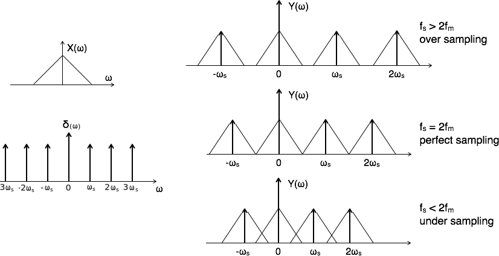Muestreo - Aliasing
El fenomeno que se produce cuando hay un under sampling se denomina Aliasing, derivado de Alias.
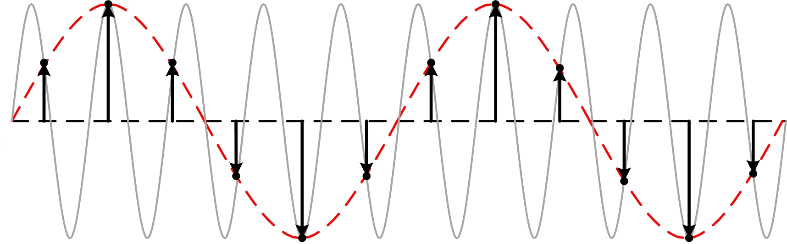Muestreo - Aliasing
En imagenes, se lo conoce como efecto Moire.


Transformadas
| Señales Continuas | Señales Discretas | |
|---|---|---|
| Energía Finita | Transformada Continua de Fourier | Transformada de Laplace |
| Energía Ifinita | Transformada Discreta de Fourier | Transformada de Z |
Transformadas - Laplace
Es una extensión de la transformada de Fourier, ya que solo agrega un termino
$$F_{(\omega)} = \int\limits_{t=-\infty}^{\infty} f_{(t)} e^{-st} dt \qquad s = \sigma+j\omega$$
Transformadas - Z
$$X_{(z)} = \sum_{n=-\infty}^\infty x_{[n]}z^{-n} \qquad z=\rho e^{j\Omega}$$